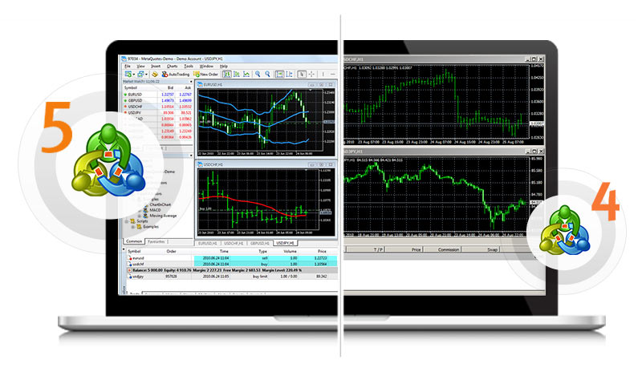

Trading
What is forex trading?

The forex market or the foreign exchange market is one of the largest financial markets in the world in terms of liquidity, with an average trading volume of more than 5 trillion dollars per day.
Forex is one of the types of direct trade, and it is an acronym for the term Foreign Exchange Market, that is, the foreign exchange market, by trading one currency against another, often with the aim of making a profit.
In addition, the forex market is one of the most dynamic and active financial markets, and it also provides its users with high levels of liquidity that most other markets lack.
The most popular currency pairs that are traded:
Currency Pairs
| EUR/USD | USD/JPY | GBP/USD |
| USD/CAD | NZD/USD | AUD/USD |
| USD/CHF | AUD/CAD | CHF/JPY |